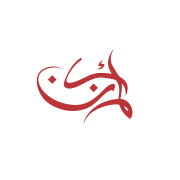
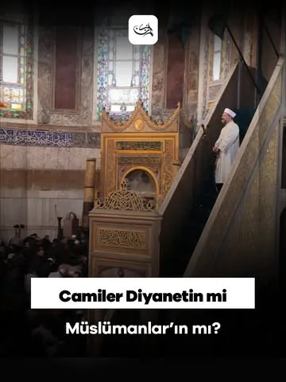
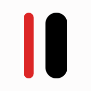

#00başlangıç bloğu
blok 10son özet e0f3d5sıradaki #11

Medya · Yayında · kanon.com.tr
blok#01özet6d04f5öncekikongre
Kanon anti-siyonist bir internet medyasıdır. Ortadoğu, politika ve kültür üzerine canlı haber akışı, yazar görüşleri, derinlemesine araştırmalar ve çeviriler yayınlar; videolarını sosyal hesaplarından da paylaşır.


Medya · Yayında · nextlangua.com
blok#02özet7f9412önceki6d04f5
NextLangua yapay zekâ destekli bir dil öğrenme araç kutusudur; başta Arapça. Ortak kütüphanedeki videoları özgün altyazısı ve çevirisiyle izler, kendi seçtiğin videoyu içeri aktarırsın. Aralıklı tekrar kelime kutusu, sekiz alıştırma, seviye analizi ve yapay zekâ eğitmeniyle sohbet aynı yerdedir. Arayüzü Türkçedir.
İktisat · Yayında · boykotsuzrota.com
blok#03özetffa5aaönceki7f9412
Boykotsuz Rota, İsrail boykot listesindeki ürünleri satmayan işletmeleri haritada gösterir: marketler, restoranlar, kafeler ve fırınlar, giyim mağazaları, akaryakıt istasyonları. İşletmeler kategoriye ve şehre göre aranır.
Aktivizm · Yayında · instagram.com/uegorgtr
blok#04özetf13caeöncekiffa5aa
Antisiyonizm Okulu, siyonizmin ideolojik kökenlerini, tarihsel ortaya çıkışını, küresel etkilerini ve bugünkü sonuçlarını ele alan bir eğitim programıdır. Dersleri alanında yetkin 14 eğitmen ve akademisyen verir. Programı UEG yürütür; başvuru UEG'nin Instagram profilindeki bağlantıdan yapılır.
Medya · Yapımda · P-05
blok#05özet03fd73öncekif13cae
You Are Not Numbers, Gazzeli gençlerin kendi hikâyelerini yazdığı We Are Not Numbers'a (wearenotnumbers.org) bir cevaptır: Türkiye'deki gençlerin ve öğrencilerin yazdığı yazıları bir araya getirir. İletişim ve anlatı alanında çalışır; youarenotnumbers.org adresinde yayınlanacak.
Türkiye'den gençler ve öğrenciler çalışıyor.
Bülten · Yayında · P-06
blok#06özet4cf445önceki03fd73
Kongre bültenini telefonda rahat okunur hale getiren hafif okuyucu. Kongre'nin kendi yayını için yapıldı.
2 kişi çalışıyor.
Aktivizm · Yapımda · P-07
blok#07özet52140eönceki4cf445
Filistin için çalışan kuruluşları alanına ve şehrine göre gösteren açık veri seti ve harita.
4 kişi çalışıyor.
Davalar · Fikir · P-08
blok#08özet8a67e5önceki52140e
Siyonizmle ilgili davaların duruşma tarihlerini ve belgelerini bir zaman çizelgesinde toplar.
Sanat · Fikir · P-09
blok#09özet1d60e5önceki8a67e5
Filistin için yapılmış afişleri serbest lisansla ve baskıya uygun çözünürlükte sunar.
Hukuk · Fikir · P-10
blok#10özete0f3d5önceki1d60e5
Suç duyurusu ve bilgi edinme başvurusu için adım adım rehber ve doldurulabilir şablonlar.
3 kişi çalışıyor.